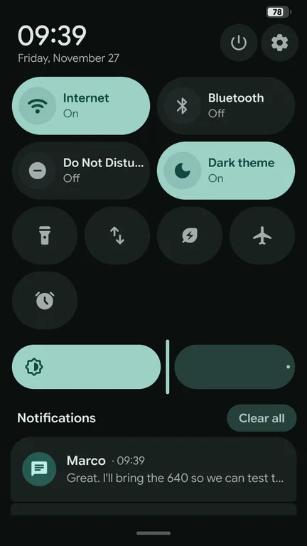
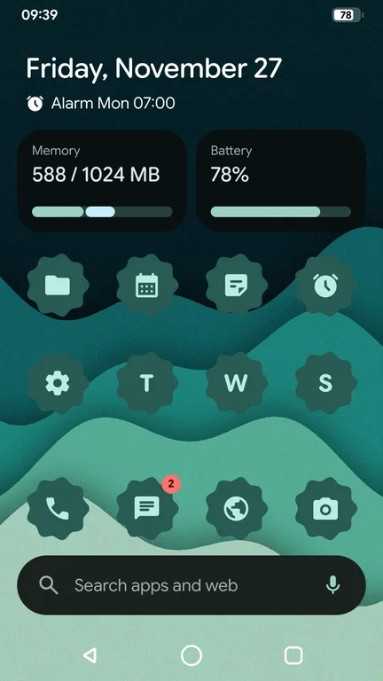
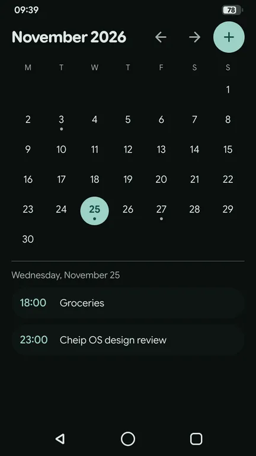

Your Lumia,
reborn.
Cheip OS is a light Linux phone system with a Material 3 Expressive interface, made for phones with 1 GB of RAM. It installs from this page, with the phone connected to your PC. Windows Phone stays on the phone.



What works today
Tested on a Lumia 735 (RM-1038). This list only says what we have seen working on the phone.
Working
- Boot from the Windows Phone boot menu, dual boot
- Screen and touch
- Home, quick settings, settings, files, clock, notes, calendar
- On-screen keyboard
- Install and updates from this page over USB
In progress
- All four CPU cores (today the system runs on one)
- Wi-Fi and web browsing
- Install on the internal memory instead of the microSD
- Battery percentage from the fuel gauge
- Calls and mobile data, camera, GPS, Bluetooth
- Android apps
Devices
Lumia phones with the Snapdragon 400 family can share one Cheip OS build. Only the 735 is tested.
Install on Lumia 735
About 20 minutes the first time, with the phone connected to a Windows PC. After the unlock, everything happens on this page.
Get ready
- Charge the phone above 50%.
- A microSD card of 8 GB or more inside the phone. It will be erased. You don't need to take it out.
- A Windows PC with Chrome or Edge, and a USB data cable.
- Copy your photos and files somewhere safe.
Unlock the bootloader
A Lumia only starts systems signed by Microsoft until it is unlocked. You do this once, with WPInternals on the PC.
- Run WPInternals as administrator and connect the phone.
- Open Unlock > Unlock bootloader. It asks for the FFU of your phone, the programmer for your model and a donor FFU.
- Press Unlock and keep the cable connected until it's done.
on the PC
Add Cheip OS to the boot menu
- Turn the phone off. With the cable connected, hold Volume up, press Power, and keep Volume up held until a lightning bolt appears.
- In WPInternals choose Switch to Mass Storage mode. The phone's drives appear on the PC.
- Press Start Cheip OS by default and pick the EFIESP folder inside the MainOS drive (or the EFIESP drive, if your phone shows one).
The volume keys can't move inside the Lumia boot menu, so the phone starts the default system. Come back here to switch between Cheip OS and Windows Phone. A backup of the boot configuration is kept on the phone (BCD.cheipbak) and in your Downloads.
Install Cheip OS
- Press Install Cheip OS.
- Restart the phone: hold Power + Volume down until it vibrates, then let go. Keep the cable connected.
- For a few seconds the phone shows text on a black screen: that's the Cheip bootloader. The site finds it and writes Cheip OS to the microSD. The bar shows the progress, then the phone restarts by itself.
The first time, Chrome must be allowed to talk to the phone: while the bootloader text is on screen, press Pair phone and pick it in the list. The bootloader waits only a few seconds, so if you miss it, just restart the phone again.
Start Cheip OS
The phone restarts into Cheip OS. The first start takes a little longer while the system grows to fill the microSD. To use Windows Phone again, repeat step 3 and press Start Windows Phone by default.
What you get
Rendered from the same code that runs on the phone, filled with sample data.

